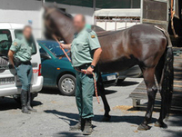

Niño y plato de brócoli volverán a verse las caras
Wed, 15 Feb 2012 08:58:32 +0000
Ricardo Guzmán y un plato de brócoli se encontraron ayer frente a frente a la hora de cenar. Ricardo, que pidió la anulación del encuentro y se fue a la cama sin cenar, prometió que volvería a enfrentarse al plato de brócoli hoy al mediodía. En un primer momento, Guzmán solicitó un rival de su [...]
Ricardo Guzmán y un plato de brócoli se encontraron ayer frente a frente a la hora de cenar. Ricardo, que pidió la anulación del encuentro y se fue a la cama sin cenar, prometió que volvería a enfrentarse al plato de brócoli hoy al mediodía. En un primer momento, Guzmán solicitó un rival de su nivel “como por ejemplo salchichas chisparritas con ketchup”, petición que fue denegada por su madre, quien insistió en que Ricardito debía comerse el plato “como un Pepe”.
El ambiente en la cocina, según ha explicado el padre de Ricardo a la prensa, “era irrespirable”. Ricardo y el brócoli estuvieron mirándose a los ojos fíjamente y de vez en cuando el niño susurraba “estúpido, estúpido brócoli”. Según el padre, el encuentro de vuelta no debería disputarse “por cuestiones de seguridad” pero la madre ha confirmado que éste tendrá lugar al mediodía de hoy.
Ricardo y el brócoli volverán a verse las caras en un escenario similar pero, tal y como se han apresurado a señalar algunos testigos (la hermana mayor de Ricardo), el entorno será mucho más favorable para Guzmán: “Al mediodía Ricardo come con su abuela, que es un rival fácil y le dejará marranear el plato y luego le freirá un huevo, como hace siempre”. Pese a las ventajas, este nuevo enfrentamiento podría suponer un duro revés para Ricardo, que la semana pasada se vio obligado a terminarse un lenguado pese a que todo parecía indicar que se saldría con la suya. “Mi madre jugó muy bien sus cartas y le prometió un flan para después, es la ventaja que tiene jugar en casa… Mi hermano evidentemente se vino abajo ante tal estrategia”, comenta la hermana.
El niño, pese a la presión que hay sobre él, se muestra confiado “aunque no hay rival pequeño” y asegura que “esto acaba hoy”.
La Guardia Civil detiene al caballo del malo
Tue, 14 Feb 2012 13:16:23 +0000
Tras una larga y compleja operación sin precedentes, la Guardia Civil ha detenido al caballo del malo esta mañana en el Desierto de Tabernas (Almería). Ha sido después de una persecución en la que han participado 25 vaqueros de la Benemérita, que tras media hora al galope han logrado acorralar al equino en un área [...]
Tras una larga y compleja operación sin precedentes, la Guardia Civil ha detenido al caballo del malo esta mañana en el Desierto de Tabernas (Almería). Ha sido después de una persecución en la que han participado 25 vaqueros de la Benemérita, que tras media hora al galope han logrado acorralar al equino en un área de servicio, empotrándolo contra un Renault Mégane.
“Sabíamos que vivía en la clandestinidad, haciendo trabajitos ocasionales en alguna romería, pero dar con él era difícil porque se confundía entre los caballos normales”, explica uno de los agentes. Finalmente, ha sido esposado entre relinchos y puesto a disposición judicial. Se le acusa de colaboración con banda armada y de transportar hachís en una red de caballos de la droga que operaba desde un chalet de El Puerto de Santa María, de donde pudo escapar momentos antes de una redada policial. Sin embargo, los “golpes” más sonados en los que su intervención fue crucial se cometieron hace tanto tiempo que no será juzgado por ellos. “El asalto y robo de un tren es de 1903, o sea que hace tiempo que el delito ha prescrito”, aclara la Guardia Civil.
El caballo del malo ha sido recibido en Almería con gritos de “¡Hijo puta!” y “¡Asesino!”. La ciudadanía aún recuerda con dolor lo ocurrido en septiembre de 2005, cuando el animal embistió al Pequeño Poni provocándole graves contusiones que derivaron en parálisis del lado izquierdo del cuerpo. “Es comprensible que la gente exprese su ira pero no hay que olvidar que, como cualquier detenido, tiene sus derechos y deben ser respetados”, declara Dolores Parmalat, portavoz en España de la protectora de animales PETA. Parmalat añade que “sin restar gravedad a los delitos cometidos, hay que tener en cuenta que este caballo creció rodeado de maleantes”.
Primera victoria del ministro Fernández Díaz
El éxito de la operación es una de las primeras medallas que puede colgarse el nuevo Gobierno y, en concreto, el actual ministro del Interior Jorge Fernández Díaz. Al ser preguntado por el caballo del malo, Fernández Díaz ha sentenciado que “España era demasiado pequeña para los dos” y luego ha lanzado un gargajo que se ha estampado directamente en el objetivo de una cámara de La Sexta Noticias.
Antonia la del cuarto no, la del quinto, pues su marido es un inútil, según los analistas
Mon, 13 Feb 2012 10:52:11 +0000
“Que ni tiene oficio ni beneficio”, concluye el informe publicado ayer por diversos analistas y al que ha tenido acceso El Mundo Today. El estudio se centra en José Luis, un ciudadano “que tú conoces, el marido de la que a veces va con el perro ese pequeño, que se da aires, así, de señorona… [...]
“Que ni tiene oficio ni beneficio”, concluye el informe publicado ayer por diversos analistas y al que ha tenido acceso El Mundo Today. El estudio se centra en José Luis, un ciudadano “que tú conoces, el marido de la que a veces va con el perro ese pequeño, que se da aires, así, de señorona… sí hombre, aquella que su cuñado trabaja en la Fecsa”. Los resultados han provocado reacciones de todo tipo tanto en la prensa como el ámbito político. “Yo ya me lo temía, porque es que se le ve que ese hombre tiene pinta de no tener donde caerse muerto, pese a los aires que se da su mujer”, afirmaba un experto en Onda Cero en vista de los resultados.
El estudio, realizado por el CSIC, es prolífico en comparativas y análisis del entorno inmediato de José Luis (el marido de la Antonia), dado que una investigación de tal calado precisa poder contrastar al individuo en cuestión con otros. “Según diversas estimaciones, y en base al estudio que se inició hace dos años, José Luis es más huevón que el marido de la Paqui la del entresuelo, pero menos que el de la panadera”, asegura el informe, que aporta diversas gráficas de productividad y hombría, para concluir que “José Luis será un inútil pero los demás también porque antes un hombre era un hombre y hoy en día es una leche”.
El Instituto Nacional de Estadística matiza los resultados
El Instituto Nacional de Estadística (INE), a través de su director Modesto Cabellos, se ha apresurado a destacar los poco concluyentes que son los resultados del estudio del CSIC. En un comunicado se reprocha “la falta de contenidos efectivos” de su informe, así como el hecho de que se utilice un lenguaje “extremadamente llano y como de pueblo”. Por teléfono, Modesto Cabellos ha declarado que “a mí no me gusta analizar mal de nadie, pero es que uno no se puede quedar callado ante según qué”.
Ha insistido también en que no quiere “señalar ni aportar estadísticas” pero sí ha dicho que en el CSIC “hay investigadores que yo me sé que mejor me callo”. Al criticar la labor de sus compañeros, ha bajado el tono de voz considerablemente, como si pudieran oírle. La conversación ha sido breve porque, según ha dicho, tenía que volver “a la faena” porque esperaba una visita. “Va venir la hija de mi hermana la mayor a recoger un estudio que hemos hecho sobre el chico que le conviene: el mediano de la Marisa, que va para abogado y tiene cuartos”.
Hallan un Toblerone gigante en el aeropuerto de Barajas
Fri, 10 Feb 2012 11:46:35 +0000
Un grupo de turistas holandeses encontró ayer una chocolatina Toblerone de tamaño descomunal en una tienda de la terminal 4 del aeropuerto de Barajas. El hallazgo, tomado inicialmente como una divertida anécdota, levantó las sospechas de las autoridades, que en estos momentos siguen investigando el origen del rarísimo ejemplar. La chocolatina estaba situada en uno [...]
Un grupo de turistas holandeses encontró ayer una chocolatina Toblerone de tamaño descomunal en una tienda de la terminal 4 del aeropuerto de Barajas. El hallazgo, tomado inicialmente como una divertida anécdota, levantó las sospechas de las autoridades, que en estos momentos siguen investigando el origen del rarísimo ejemplar. La chocolatina estaba situada en uno de los estantes del establecimiento junto a otros envases de tamaño normal. No se descarta que la presencia de un fluorescente cerca de la chocolatina haya podido generar algún tipo de reacción, aunque los expertos consultados consideran muy improbable que el calor o el impacto de la luz hayan modificado el tamaño del producto.
“Se está estudiando la composición molecular del objeto al tiempo que se revisan las grabaciones de las cámaras de seguridad por si éstas registraron el cambio de tamaño en tiempo real. De descubrirse las causas de este agrandamiento, estaríamos a un paso de poder reproducirlas”, explica Grijelmo Dallet, físico de la Universidad Complutense de Madrid.
Según las autoridades, nunca antes se había producido un hallazgo parecido: “Se han encontrado setas excepcionalmente grandes, peces o como mucho piedrolos, pero nunca objetos de fabricación industrial”. El único caso remotamente parecido al del Toblerone de Barajas tuvo lugar en Francia hace seis años, cuando unos niños hallaron un Chupa Chups enorme. Tras el susto inicial, se realizó una inspección del objeto que acabó revelando la existencia de Chupa Chups de tamaño normal dentro del Chupa Chups grande, siendo éste un mero envoltorio fabricado “con mala idea, para confundir a los niños. No fue más que el truco de algún bromista. Lo de esta chocolatina no es lo mismo: dentro del paquete hay una barra de chocolate con leche, miel y almendras excepcionalmente grande. No hay trampa ni cartón, aparte del cartón del envoltorio”, aclara un agente.
Experimentos secretos con chocolatinas
Aunque se trata solo de un rumor, hay quien defiende la teoría de que el Toblerone de Barajas habría sido abandonado por un científico que en el último momento tuvo miedo de que en el control del aeropuerto le requisaran el objeto y le obligaran a dar explicaciones. “El Gran Colisionador de Hadrones se encuentra cerca de Ginebra y el chocolate este se fabrica en Suiza. Yo no digo nada pero también te lo digo todo, no sé si me entiendes”, declara un responsable de mantenimiento del aeropuerto que, en una ocasión, encontró “una rata así de grande pocos meses antes de que pasara lo del 11S”.
De momento, nadie se ha atrevido a probar el chocolate de este Toblerone gigante “por si provoca alteraciones en el organismo tales como cagarros de varios metros de longitud o granos como bolas de billar”.
OBK abandona la música pero mantiene grupo parlamentario en el Congreso
Thu, 09 Feb 2012 12:00:53 +0000
Jordi Sánchez y Miguel Arjona, componentes del grupo de techno pop OBK, anunciaron esta semana que se separaban tras dos décadas de éxito en los escenarios y dejaban en el aire la continuidad de su proyecto político. Ha sido esta misma mañana cuando Arjona ha confirmado en el debate del programa “¡Anda ya!” que “OBK [...]
Jordi Sánchez y Miguel Arjona, componentes del grupo de techno pop OBK, anunciaron esta semana que se separaban tras dos décadas de éxito en los escenarios y dejaban en el aire la continuidad de su proyecto político. Ha sido esta misma mañana cuando Arjona ha confirmado en el debate del programa “¡Anda ya!” que “OBK deja la música pero mantiene grupo parlamentario en el Congreso”. El dúo considera que “jurando la Constitución ante el Pleno del Congreso certificamos un compromiso con la ciudadanía que seguimos manteniendo aunque musicalmente tomemos otras sendas”.
Con ello, se disipan los temores a que se repitiera la situación vivida por Camela cuando en 1998 su vocalista y compositor, Dionisio Martín Lobato “Dioni”, anunciaba entre lágrimas que abandonaba su cargo pasando a ser ministro sin cartera y limitándose a gestionar las relaciones con la Unión Europea para la transposición de las normativas comunitarias.
“Con el desmembramiento socialista y la mayoría de los populares sería una irresponsabilidad renunciar a nuestro proyecto alternativo y dejar colgados a los fans. Seguimos creyendo en nuestra apuesta sintetizadora para España y no hay mar en el mundo ni fuerza capaz que pueda este fuego apagar”, ha insistido Miguel Arjona, que sigue definiéndose como “un socialdemócrata synthpop de centroizquierda”.
Aunque OBK no ha querido precisar los motivos de su ruptura musical, los analistas consideran que la crisis de las discográficas podría provocar más abandonos en el sector, lo cual afectaría indefectiblemente a la estabilidad de la clase política. “Tras el último congreso del PSOE quedó claro que Pedro Guerra o Ismael Serrano, auténticos pilares en otros tiempos, ya no pintan nada en la Ejecutiva del partido, que se encuentra en plena búsqueda de nuevos instrumentos para recuperar el liderazgo”, apunta el analista político Antón Losada. Entre las “viejas glorias” de la escena política apenas quedan figuras como Nacho Cano, que sigue tocando el órgano consultivo en el Consejo de Estado.
Chenoa BAI se refuerza
Junto a OBK, la cantante Chenoa ha expresado su interés en reforzar las apuestas políticas ante un clima de crisis en el sector musical. Su coalición aspira a convertirse en la principal fuerza política de la Comunidad Foral y bajo el lema “Chenoa BAI” (“Chenoa Sí”) pretende aglutinar a la ciudadanía navarra, vasquista, progresista y muy fan de Operación Triunfo.
España vale 15 camellos, según una agencia de calificación marroquí
Tue, 14 Feb 2012 15:12:09 +0000
La agencia Moody’s rebajó anoche la calificación de la deuda soberana española junto a la de otros cinco países europeos y esta tarde, en la misma línea, la agencia de calificación marroquí Abdallah&Kintawi ha comunicado que España vale 15 camellos según sus baremos financieros. La noticia no ha tardado en provocar reacciones tanto en el [...]
La agencia Moody’s rebajó anoche la calificación de la deuda soberana española junto a la de otros cinco países europeos y esta tarde, en la misma línea, la agencia de calificación marroquí Abdallah&Kintawi ha comunicado que España vale 15 camellos según sus baremos financieros.
La noticia no ha tardado en provocar reacciones tanto en el IBEX 35, que ha perdido 47,60 puntos, como en el Gobierno. El propio Mariano Rajoy ha expresado su sorpresa, aunque ha matizado que “es pronto para sacar conclusiones porque en la cultura árabe el valor de un camello no equivale al que aquí tienen un burro o una vespa”. Sea alta o baja la valoración, es la primera vez que desde Marruecos se emite un veredicto tan preciso y contundente sobre nuestro país, y no se sabe si el asunto tendrá consecuencias a nivel diplomático. La oposición se ha apresurado a preguntar al Gobierno de qué hablaron exactamente el presidente y el rey cuando el ministro marroquí de Exteriores, Saaddine el Otmani, visitó España a principios de este mes. “Hablamos de temas agrícolas y luego, al final, sí es cierto que salió el tema de las mujeres y los camellos, pero en plan informal y porque para ellos va todo junto”, ha aclarado Rajoy.
El Ejecutivo de Mariano Rajoy ha negado en bloque que se esté en negociaciones con Marruecos para una futura compraventa y, en palabras del propio presidente, “si decidiéramos vender España a los marroquíes, los españoles serían los primeros en saberlo”. Descartado un acuerdo en la sombra, el ministro de Economía, Luis de Guindos, sí ha matizado que “a veces se producen equívocos en los encuentros entre mandatarios”. No ha negado, por tanto, que al sacar el tema de los camellos el ministro marroquí hablara en serio “mientras nosotros creíamos que estaba de cachondeo”.
“Pilar Rubio ya vale como mínimo seis camellos”
De Guindos insiste en quitar hierro al asunto y cuestiona el informe de la agencia marroquí: “15 camellos es una cantidad ridícula para todo el país porque ya solo con Pilar Rubio nos darían seis tirando por lo bajo”, ha explicado. También ha añadido que “el Gobierno encargará al Observatorio de la Mujer un estudio para determinar cuántos camellos vale de media la mujer española, con el fin de desmontar con argumentos de peso el veredicto de Abdallah&Kintawi”.
Un fallo cósmico impide a las pitonisas dar datos sobre los aries
Mon, 13 Feb 2012 11:43:16 +0000
A las once y media del pasado domingo, un fallo en la alineación de Marte con Mercurio y Júpiter provocó la caída generalizada del servicio de predicción del horóscopo, afectando a la totalidad de los aries tanto en Europa como en Estados Unidos. En unas horas, Mayra Oscureile, responsable del servicio en Latinoamérica, confirmaba oficialmente [...]
A las once y media del pasado domingo, un fallo en la alineación de Marte con Mercurio y Júpiter provocó la caída generalizada del servicio de predicción del horóscopo, afectando a la totalidad de los aries tanto en Europa como en Estados Unidos. En unas horas, Mayra Oscureile, responsable del servicio en Latinoamérica, confirmaba oficialmente que la caída del servicio afectaba también a América del Sur: “Estamos al tanto de que hay usuarios en Europa, Oriente Medio y África, India, Brasil, Chile y Argentina que están experimentando retrasos en los servicios de predicción. Estamos trabajando para restablecer la normalidad del servicio. Pedimos disculpas por cualquier inconveniente que esto haya podido ocasionar”.
Aunque las pitonisas europeas ya han empezado a recibir de nuevo algunas pistas sobre el amor y el dinero, el tráfico de datos es muy lento y no es posible garantizar la fiabilidad de las informaciones concernientes a este signo zodiacal. “Si tienen que tomar decisiones importantes, recomendamos que esperen a que se recupere del todo el servicio”, declara Oscureile.
Más de 24 horas después desde la primera caída, los parapsicólogos ya han detectado el fallo, aunque no saben cuándo podrán resolverlo definitivamente. Su explicación técnica del error es la siguiente: el problema se debió a la saturación de la energía cósmica en el momento de la alineación planetaria y a un error en el conmutador Xi-Gorladias que tenía que derivar en ese momento los datos a un arcano adicional o Bi-Jenoflexos. Ese problema ya está solventado, pero no sus consecuencias: el tapón producido por los miles de datos acumulados sigue saturando la recepción de predicciones.
Nadie lo vio venir
El fallo a gran escala ha provocado la indignación de los usuarios, que critican a través de las redes sociales que los adivinos no fueran capaces de adelantarse a los acontecimientos. Aunque los expertos aseguran que la red de predicciones soporta altas exigencias técnicas ya que el tráfico va cifrado para garantizar la privacidad del cliente, una pitonisa inglesa ha explicado a The Guardian que el sistema tiene una arquitectura anticuada y presenta problemas de escalabilidad. “Esto es un toque de atención. O renovamos la infraestructura de predicción de datos o nos exponemos a fallos de mayor calado capaces de provocar el caos en el mundo”, reconocía Mayra Oscureile.
La reforma laboral del Gobierno permitirá despedir a un empleado con la mirada
Fri, 10 Feb 2012 12:34:03 +0000
La supresión de los contratos con indemnización de 45 días por año trabajado en los despidos improcedentes no será la única medida que adoptará el Gobierno en su reforma laboral. Además, el Consejo de Ministros, que está reunido en estos momentos, ha acordado que una sola mirada del empresario sea suficiente para proceder al despido [...]
La supresión de los contratos con indemnización de 45 días por año trabajado en los despidos improcedentes no será la única medida que adoptará el Gobierno en su reforma laboral. Además, el Consejo de Ministros, que está reunido en estos momentos, ha acordado que una sola mirada del empresario sea suficiente para proceder al despido de un empleado. El ministro de Economía, Luis de Guindos, ha aludido “a la riqueza del lenguaje no verbal, que puede y debe tener reconocimiento legal”.
La intención de esta medida es librar al empleador de la necesidad de reunirse con el trabajador para comunicarle la mala noticia. Se agiliza así el proceso y se evitan también, según el Gobierno, “contextos en los que el empleado puede manipular con pucheritos, reproches y amenazas. Son reacciones comprensibles pero que en el fondo no ayudan a nadie”.
Según Luis de Guindos, “hay estadísticas que dicen que el 30% de los trabajadores en una gran empresa mantienen su empleo porque dan pena, y esto no es bueno para la competitividad ni para la dignidad de las personas”. No se descarta tampoco que las miradas del tipo “eres un hijoputa” puedan considerarse motivo de despido.
“Yo no sé exactamente qué implicación tiene a nivel legal la mirada de estar flipando en colores, pero es exactamente la que tengo en estos momentos”, declaraba Ignacio Fernández Toxo, secretario general de Comisiones Obreras, tras conocer la noticia. Fernández Toxo considera que “la creatividad del nuevo Gobierno a la hora de oprimir a la clase obrera es realmente encomiable” y anima a todos los trabajadores “a acudir a sus puestos de trabajo con antifaz, incluidos los controladores aéreos”.
Cursillos para aprender a mirar
Numerosos empresarios han mostrado su interés en la comunicación no verbal al saber que el Gobierno la tomará en consideración. “Yo estaría dispuesto a contratar a un ‘coach’ personal que fuera capaz de enseñarme a pedir un café sin tener que hablar. Algún empleado se ha quejado de mi brusquedad cuando grito ‘¡Café! ¡Café!’ pero reconozco que soy incapaz de hacerlo mejor”, explica el directivo de una importante multinacional. “No tener que hablar con las personas es cada vez más fácil gracias a las nuevas tecnologías de la comunicación”, insiste el empresario, refiriéndose a los nuevos sistemas para realizar videoconferencias: “Despedir a alguien con la mirada está muy bien, pero si encima te ahorras el hecho de tenerlo delante, ya es perfecto”. El Gobierno admitirá también los bufidos o las frases que se dicen en voz alta y mirando al techo para que alguien en concreto se sienta aludido.
Lanzan unos calzoncillos con gotita de serie
Fri, 10 Feb 2012 11:17:55 +0000
Calvin Klein ha presentado esta semana su colección de ropa para la temporada que viene. El gigante estadounidense apuesta por líneas minimalistas y alegres y, en el caso de la ropa interior masculina, con “gotita de orina incorporada”. De este modo, trata de evitarse que tengan que ser los propios usuarios los que depositen la [...]
Calvin Klein ha presentado esta semana su colección de ropa para la temporada que viene. El gigante estadounidense apuesta por líneas minimalistas y alegres y, en el caso de la ropa interior masculina, con “gotita de orina incorporada”. De este modo, trata de evitarse que tengan que ser los propios usuarios los que depositen la conocida gotita de orina en sus calzoncillos igual que los tejanos se desgastan y es posible comprarlos desgastados de fábrica. “Es una línea que está inspirada en la abundancia de agua, con telas luminiscentes y muy vaporosas que permiten que la típica gotita de orina que se queda en el calzoncillo se transparente con formas muy sugerentes”, señala la compañía en un comunicado.
Calvin Klein es la primera marca que se ha centrado “en ese pequeño diablillo incontrolable” para incorporarlo a sus prendas, pero es cierto que las revistas de moda ya habían prestado atención “a la típica gotita de orina que se queda en el prepucio y mancha la ropa interior” para convertirla en algo trendy. La revista para hombres “Esquire” publicó en octubre el artículo “Look hotter… on the urine”. Y Marie Claire ofreció recientemente un número “especial orina” que encabezaba el amplio reportaje “La gotita: ¿cómo le gusta a él? ¿Y a ella?” donde se daban “43 sencillos trucos para dejar la gotita más sexy”.
Pese a todo, desde Calvin Klein no dudan en atribuirse el mérito. “Le hemos dado una vuelta a la naturaleza de la ropa interior centrándonos en los aspectos sensoriales… Todo es de origen natural y está centrado en ofrecer una experiencia única”, explican en su comunicado. Algunas asociaciones han lamentado el hecho de que, para fabricar esta ropa interior, la marca tenga fábricas en países subdesarrollados donde están obligando a los empleados a “escurrírsela gotita a gotita” sobre las prendas.
En Internet se ha aplaudido la iniciativa de Calvin Klein. “Si ya vienen con mancha de serie es estupendo, porque así ya ni hago el esfuerzo”, comentaba un tuitero. Otro sugería a las marcas de tejanos que dejaran de fabricar cremalleras funcionales en sus tejanos: “Así podré salir del baño con la cremallera bajada. Y si se pone de moda ir con la chorra fuera todo el rato, ya seré feliz del todo”.
Un elfo hechicero de nivel 53 se echa novia
Thu, 09 Feb 2012 09:23:27 +0000
El jueves pasado, Arnau Sanz, un elfo hechicero de nivel 53 maestro en hechizos de destrucción de tipo fuego, comentó a su comunidad que había conocido a una chica y que, por tanto, se veía obligado a aparcar temporalmente su carrera en el mundo de la fantasía para pasar más tiempo con los suyos y [...]
El jueves pasado, Arnau Sanz, un elfo hechicero de nivel 53 maestro en hechizos de destrucción de tipo fuego, comentó a su comunidad que había conocido a una chica y que, por tanto, se veía obligado a aparcar temporalmente su carrera en el mundo de la fantasía para pasar más tiempo con los suyos y especialmente con ella. Diversos científicos de todo el mundo han reaccionado con escepticismo ante la noticia: “No hay antecedentes en la literatura científica ni fantástica de que una persona de raza elfa pueda relacionarse sexualmente con una novia humana. Los elfos, orcos y demás suelen ser individuos aislados asexuales”, explica un científico.
“Te pasas más de 300 horas delante de un ordenador buscando monedas de oro y luego te echas novia. Hace que todo parezca una estúpida pérdida de tiempo”, comentan los compañeros de Arnau.
Pese a que ahora dice tener la mente “en cosas de gente que tiene novia”, Sanz no puede evitar emocionarse cuando habla de su vida como hechicero. “Si construyes una armadura con piezas de armadura que dan un bonus para construir armaduras, consigues una armadura mejor. Y puedes volver a usar esa armadura para construir más armaduras que, a su vez, te permiten tener una armadura aún mejor. Todo radica en la armadura. Y una vez lo has conseguido pues ya puedes plantearte jugar”, explica Arnau. “Por eso es necesario invertir tanto tiempo. Y por eso mucha gente no entiende que me vea en la necesidad de aparcarlo. Pero el amor todo lo puede y mis prioridades ahora han cambiado. Voy a intentar cambiar todos mis PX por un anillo de compromiso. Se volverá loca cuando lo vea”, explica Arnau.
Respecto al rechazo de sus compañeros, Sanz replica que lo que sienten es envidia y que no deberían sorprenderse de que su prioridad sea tener novia ya que, si se refugió “en la alquimia y en la escuela mágica de la destrucción”, fue porque su última relación le causó un profundo dolor y se juró a sí mismo que no aquello le volvería a ocurrir. Dicha relación surgió en una comunidad online de “La llamada de Chtulhu”, donde conoció “a alguien muy especial” de quien no quiere hablar. Tras un silencio, Arnau reconoce que al final descubrió que esa persona era en realidad otro chico de su edad llamado Antonio “con granos y un bigote ridículo”. Según explica, todos los jugadores usaban unos apodos tan rebuscados “y un lenguaje tan arcano que costaba distinguir el género de cada cual”. Por suerte, la chica de ahora “tiene pinta de ser una mujer de verdad”.
La novia de Arnau, Hotrussiansgirlfriend18, llegará la semana que viene al aeropuerto de Barcelona procedente de Bielorusia. “Mi novia me ha dicho que le tengo que enviar más dinero para comprar el billete para venirse y conocernos al fin. Pero para ella el dinero no es problema porque acaba de recibir una herencia importante, aunque para poder cobrarla también tengo que enviarle dinero. Estoy muy ilusionado, se han acabado las fantasías de elfos para mí”, concluye Arnau.
Científicos intentan reproducir elfos en cautividad
El biólogo molecular Brooklyn Lager, experto en elfos -él mismo es un elfo oscuro arquero de nivel 43- explica los motivos que hacen del caso de Arnau Sanz un suceso inédito. “Es evidente que no hay elfos con pareja ni descendencia, porque en el momento en el que establecen contacto con alguien del sexo opuesto dejan de ser elfos hechiceros y se transforman en estudiantes de ingeniería o reponedores de fruta normales y corrientes” dice Lager. Al parecer, los elfos que han hecho carrera en el mundo de la magia generalmente pierden el interés en su carrera profesional en cuanto consuman su madurez sexual, y viceversa. “Por tanto es imposible engendrar descendencia para estos especímenes, ni siquiera en cautividad o en entornos controlados. Y una profesión tan bonita como la de hechicero se está perdiendo. De ahí que estemos intentando reproducirlos en un laboratorio, pero no encontramos voluntarias para los experimentos”.